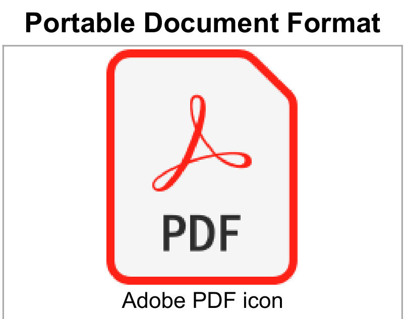
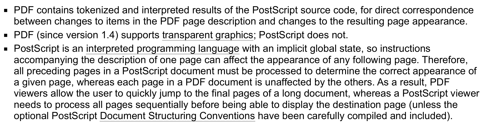

Portable Document Format (PDF), standardized as ISO 32000,
a file format developed by Adobe in 1992 to present documents, including text formatting and images, in a manner independent of application software, hardware, and operating systems.[2][3]
PDF was standardized as ISO 32000 in 2008.[5]
- Remember the year
- Test
History
- Necessário avaliar
- Avaliação escrita
Typeset text stored as content streams (i.e., not encoded in plain text);
Vector graphics for illustrations and designs that consist of shapes and lines;
Raster graphics for photographs and other types of images
Multimedia objects in the document.
Atenção
a PDF document can also support links (inside document or web page), forms, JavaScript
Exemplo
An equivalent subset of the PostScript page description programming language but in declarative form, for generating the layout and graphics.
PostScript language

Questão
Objects may be either direct (embedded in another object) or indirect. Indirect objects are numbered with an object number and a generation number and defined between the obj and endobj keywords if residing in the document root. Beginning with PDF version 1.5,
Questão
An index table, also called the cross-reference table, is located near the end of the file and gives the byte offset of each indirect object from the start of the file